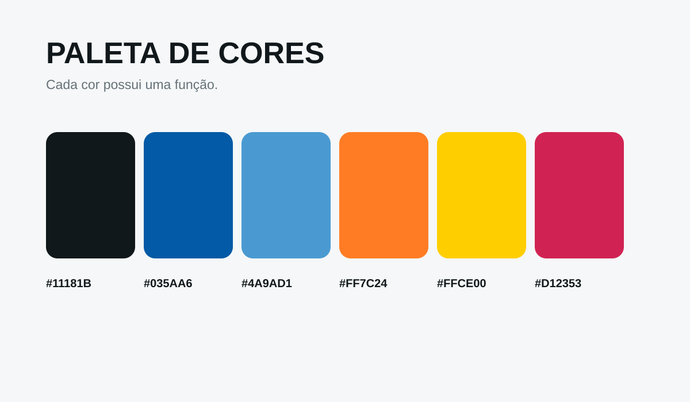
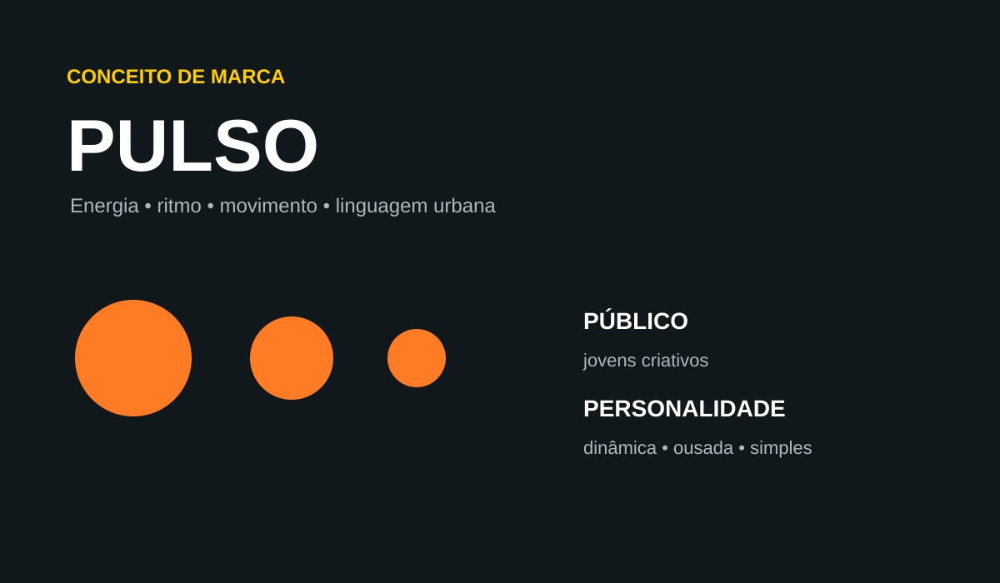
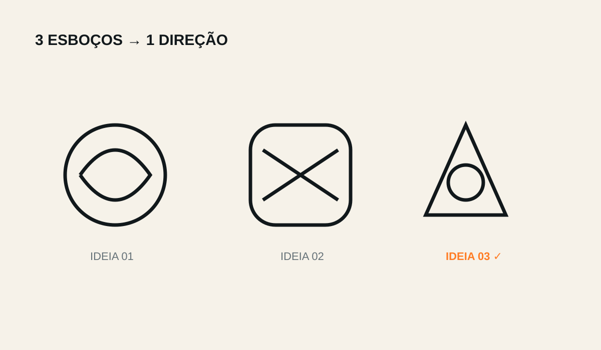

01
Contraste
Criar diferenças perceptíveis de tamanho, peso, forma ou cor.
🎯 Desafio no Canva: Faça uma composição em que exista um elemento claramente dominante.
Do fundamento à aplicação: o educando constrói uma identidade visual própria e registra o processo como o primeiro grande artefato do portfólio final.
Cada princípio deve ser compreendido e demonstrado visualmente. O educando cria sua própria versão no Canva, em vez de apenas copiar uma definição.
Criar diferenças perceptíveis de tamanho, peso, forma ou cor.

Organizar elementos a partir de um eixo ou estrutura comum.

A distância entre elementos ajuda a comunicar relação.

Repetir elementos cria unidade visual e consistência.

Tamanho, peso e posição orientam a ordem de leitura.

O espaço vazio também participa da composição.

Distribuir pesos visuais produz estabilidade na composição.
Antes do logo, a marca ganha uma linguagem: fontes, tamanhos, pesos, estilos, cores e funções.

O logo não começa no gerador de imagens. Primeiro vem a ideia, depois as alternativas e a escolha consciente.


Nome + público + personalidade + palavras-chave.
No mínimo 3 alternativas desenhadas.
Comparar e justificar a direção escolhida.
Refinar e construir a versão digital.
Gerar outra proposta e analisar diferenças.
Depois de definir o sistema visual, a marca precisa funcionar em diferentes contextos.
O trabalho final deve contar a história do projeto, mostrando escolhas e não apenas o resultado.
Os materiais do PMT tratam o portfólio como registro de processo, decisões e resultado final. O Kit de Marca segue a mesma lógica.
Objetivo: qual é o propósito da marca?
Ferramentas: quais recursos foram utilizados?
Etapas: pesquisa, esboços, decisões e produção.
Resultado: identidade aplicada e pronta para apresentação.
Referências que ajudaram a decidir.
Alternativas que foram avaliadas.
Escolhas feitas e justificadas.
Aplicações que demonstram consistência.
Os exemplos visuais estão disponíveis junto aos materiais do projeto no repositório.